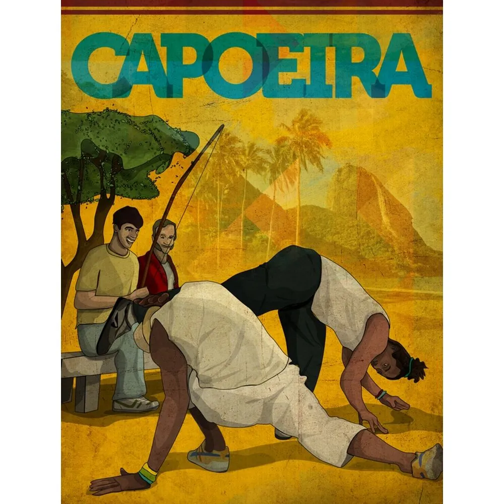
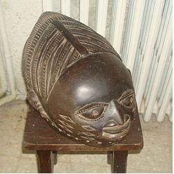

A ARTE AFRO

A capoeira é uma expressão cultural brasileira que compreende os elementos: arte-marcial, esporte, cultura popular, dança e música.
Ela constrói relações de sociabilidade e familiaridade entre mestres e discípulos, sendo difundida de modo oral e gestual nas ruas e academias.
A capoeira tem origem nos povos escravizados e se difundiu por todo o Brasil. Hoje é considerada um dos maiores símbolos da cultura brasileira.
Caracteristica da capoeira
- acompanhamento de música: berimbau, canto e palmas
- formação em roda: roda de capoeira;
- graduação do capoeirista feita por cordas de cores diferentes atadas na cintura.
máscaras africanas
As "máscaras" são as formas mais conhecidas da plástica africana. Constituem síntese de elementos simbólicos mais variados se convertendo em expressões da vontade criadora do africano.
